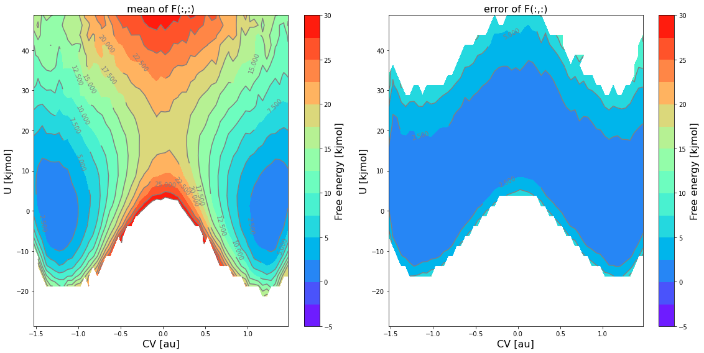

Plotting histograms and FEP/FES
1D Histograms & free energy profile
Once a 1D histogram or free energy profile/surface has been constructed, we can easily plot it using its plot routines:
#plot in line in notebook
histogram.plot()
fep.plot()
#save plot to file
histogram.plot(fn='histogram.pdf')
fep.plot(flims=[-5,30], fn='fep.pdf')
In case the histogram or free energy profile had error bars associated (see previous section), they will be included as shaded regions as illustrated in the example below:

Furthermore, the error distribution can also be used to take random samples according this distribution and plot them on top of the profile itself. This can be done using the obss keyword in the plot routine. The example below plots the mean free energy itself (indicated by including mean in the obss list) as well as 5 random samples (indicated by including 5 time sample).
fep.plot(
obss =['mean'] +['sample',]*5,
linestyles= ['-'] + ['--',]*5,
linewidths= [2] + [1,]*5,
colors = ['b'] + [None,]*5,
flims=[-5,30], show_legend=False,
)
This produces a plot similar to the one given below:

Warning
In order to get reliable estimates of random samples (as plotted in the figure above), you need to use on of the _cov variants for the error estimation method (i.e. preferably error_estimate=mle_f_cov). If not, the correlation between neighboring points will not be accounted for and the resulting profile will be more noisy than it should be.
One can also plot multiple 1D histograms or free energy profiles on a single plot using the plot_histograms or plot_feps routine respectively:
from thermolib.histogram import plot_histograms
from thermolib.fep import plot_profiles
#plot multiple histograms/feps in line in notebook
plot_histograms([hist1, hist2, hist3])
plot_profiles([fep1, fep2, fep3])
#save plot to file
plot_histograms([hist1, hist2, hist3], fn='histograms.pdf')
plot_profiles([fep1, fep2, fep3], fn='feps.pdf')
2D Histograms & free energy surfaces
To plot a 2D histogram and/or free energy surfaces, multiple options are available as it represents a 2D property. One can make …
… a 2D contour plot of just the mean profile itself:
#cmap allows to change the color scheme #ncolors determines how many regions are used in the contour plot fes.plot(flims=[-5,30], ncolors=14, cmap='rainbow')

… a 2D contour plot of the mean free energy itself as well as the error bar using the
obsskeyword:fes.plot(obss=['mean', 'error'], flims=[-5,30], ncolors=14, cmap='rainbow')
… a 2D contour plot of the mean free energy itself, the lower and upper limit of the 2-sigma error bar and a random sample using the
obsskeyword:fes.plot(obss=['mean', 'sample', 'lower', 'upper'], flims=[-5,30], ncolors=14, cmap='rainbow')

… 1D plot of a slice along one of the 2 CVs at given value of the other CV, and this for both the mean free energy itself as well as a random sample from the error distribution:
#1D sliced plot as function of CV1 for fixed value of CV2 equal to its 5-th bin fes.plot(slicer=[slice(None),5], obss=['mean', 'sample'])

{kind=link}